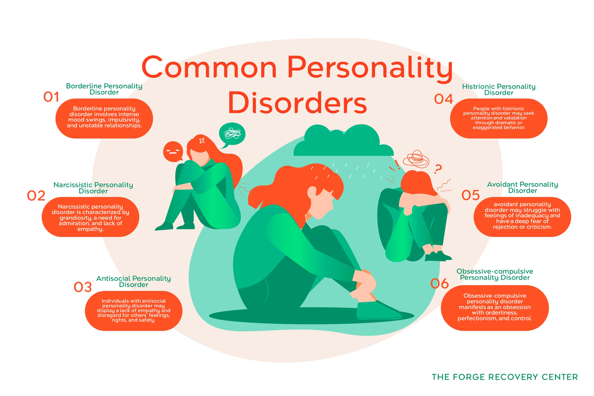

Personality Disorders

Antisocial Personality Disorder
Also known as Sociopathy, ASPD is a condition where someone feels very little regard for others and tend to not regret when they act manipulatively or other negatively toward others. This is a Cluster B personality disorder. Symptoms include:
- ignoring right and wrong
- lying and dishonesty
- lack of sensitivity
- lack of respect for others
- manipulation, using charm, wit, and flattery to get what one wants
- criminal behavior, such as theft or physical aggression
- lack of guilt, regret, and remorse
- destructive or impulsive behavior
- failure to conform
- acting recklessly or with little consideration to safety
- feeling superior or arrogant
- having stong opinions
Borderline Personality Disorder
BPD is characterized by an inability to regulate emotions and moods, often affecting relationships and self-image. People with BPD have an intense fear of abandonment. This is a Cluster B personality disorder. Symptoms include:
- fear of abandonment and frantic efforts to prevent it
- sensitivity to rejection
- a pattern of intense or unstable relationships
- quick changes in views of people (including yourself), such as hating them one moment and loving them the next
- quick changes in values or goals
- impulsivity
- suicidal or self-harming behaviors and thoughts, sometimes as threats to others
- mood swings
- feeling empty or bored often
- increased irritability and anger, especially out of proportion to events (can show through passive aggession, being overly sarcastc or bitter, losing temper, or even physical aggression)
- feelings of isolation and alienation
- periods of paranoia and loss of touch with reality
- intense bouts of depression or anxiety
- inability to tolerate being alone
Histrionic Personality Disorder
HPD is a mental health condition characterized by an unstable sense of self and overwhelming desire to be noticed. This is a Cluter B personality disorder. Symptoms include:
- attention seeking behavior
- being overly emotional or dramatic
- strong opinions
- shallow emotions that shift frequently
- thinking relationships are closer than they are
- increased concern with physical appearance
- can be easily led by others
Narcissistic Personality Disorder
Narcissistic Personality Disorder is a condition marked by a high sense of self-importance. This is a Cluster B personality disorder. Symptoms include:
- requiring constant, excessive admiration
- feeling deserving of special treatment or privileges
- expectation of recognition
- being preoccupied with fantasies of perfection in various aspects of life
- superiority, arrogance and conceitedness
- being critical or judgmental
- taking advantage of others
- being unable or unwilling to recognize or understand needs and feelings of others
- feeling envious or believing others are
- insistence on having the best
- feeling easily slighted
- difficulty managing emotions and behavior
- secretly feeling insecurity and shame, an intense fear of failure
- difficulty dealing with stress and adapting to change
Paranoid Personality Disorder
Paranoid Personality Disorder is characterized by an excessive distrust of others.
- lack of trust; unwilling to place trust in people
- being suspiscious of others
- belief others mean to harm them with no reason to feel that way
- doubts others' loyalty
- belief that a partner is unfaithful, even without proof
- takes things not meant as attacks as personal slights
- is hesitant to confide in anyone for fear of them using that information against them
- becomes hostile or angry at what they believe are insults
- hypervigilance
Schizoid Personality Disorder
Schzioid Personality Disorder is a condition where people have little desire in any kind of relationship and lack extreme emotions
- not enjoying close relationships
- wanting to be alone and not being bothered by it
- taking pleasure in few acivities
- having difficulty expressing emotion or reacting emotionally
- may be cold toward others
- feel little desire in finding a partner
- may lack humor
- may lack drive or ambition
- does not react to praise or criticism
- social isolation
Schizotypal Personality Disorder
People with Schizotypal Personality Disorder are often eccentric, holding odd beliefs, acting strangely, and lacking social skills
- lack close relationships
- have limited emotions or emotional reactions
- social anxiety
- misinterpreting events
- unusual way of thinking or acting
- strange mannerisms
- suspision, paranoia, or doubt toward others
- real belief in superstitions, magic, or special abilities
- having illusions
- dressing odd
- having unusal patterns of speech
- being a "loner"
- inability to understand relationships
- lack of understanding how they effect others
Avoidant Personality Disorder
This disorder is characterized by excessive shyness or fear of social situations as well as low self-esteem.
- extreme sensitivity to criticism or rejection
- feels worthless, useless, or otherwise not good enough
- social isolation
- avoids interactions with others
- very shy
- intense fear of disapproval, embarassment, or humiliation
- does not like engaging with anything or anyone new
- social anxiety
Dependent Personality Disorder
Dependent Personality Disorder is a condition where people are extremely dependent on others for a multitude of things. They may not be able to take care of themselves or function on their own.
- excessive reliabilty on others
- feels they need to be taken care of
- is submissive
- is clingy
- fears being left alone
- lacks confidence
- needs a lot of advice, reassurance, support, or approval
- people-pleasing
- needs help making even small decisions
- difficulty disagreeing with others
- endures poor treatment or abuse when they don't have to
- feels an urgency toward having a relationship
Obsessive-Compulsive Personality Disorder
OCPD is similar to OCD, but rather than behavior stemming from anxiety, it stems from personality traits. People with OCPD often have a preoccupation with control, perfection, orderliness, or detail.
- excessive focus on rules
- need for perfection
- need for control
- inability to get rid of things
- rigidity, stubborness, or being otherwise inflexible
- unable to change their opinion about morals, ethics, or values
- focus on being clean or orderly
- excessive focus on work, to the point where they may ignore relationships
- very detail-oriented